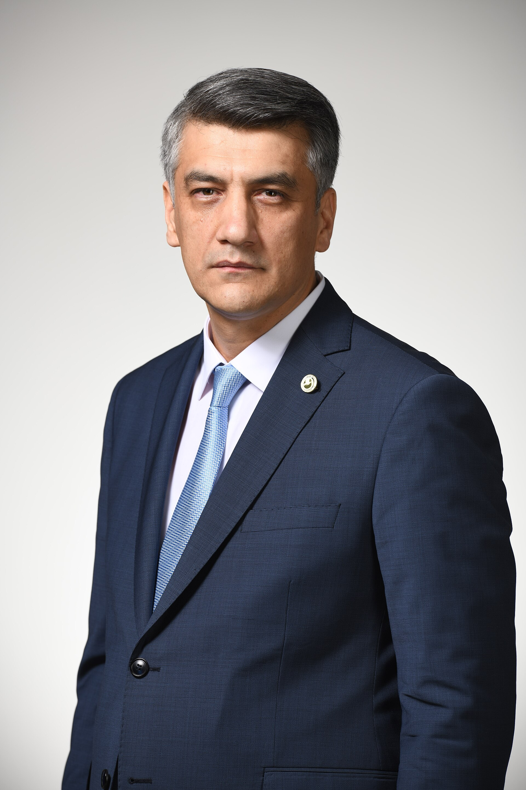

Alisher Qodirov proposes that children in Uzbek families be educated in the state language
The leader of the Milliy Tiklanish party wants to amend Article 38 of the Preschool Education Law to limit the language of early education to the state language for children of Uzbek parents. The restriction would not apply to higher education or to ethnic minorities.

Alisher Qodirov (Kadyrov), Chairman of the Central Council of Uzbekistan's Milliy Tiklanish (National Revival) Democratic Party, has proposed restricting the right of Uzbek parents to choose a language of early education other than the state language. He made the proposal on 17 November at a meeting of the party's faction, and it was published on the party's Telegram channel.
What is being proposed?
Qodirov called for amendments to Article 38 of the Law 'On Preschool Education and Upbringing.' In his view, state educational standards should require a child's primary education and upbringing to take place in the state language. 'How can primary education not be in the state language? If we cannot ensure this, then this law is of no use,' he said.
What does Article 38 say now?
In its current wording, Article 38 gives legal guardians the right to freely choose both the form of preschool education and the language of instruction. Qodirov questioned precisely this provision: 'Who is choosing freely, and what are they choosing? They are choosing a different language. What then of state policy?' the deputy asked.

Who would be exempt?
Under Qodirov's proposal, the restriction would not apply to higher education — students could study in any language. Representatives of other nationalities would also keep the right to education in their native language. The deputy framed the proposal as a national security issue, arguing that patriotism cannot be instilled in a child who has lost their mother tongue.
The numbers
According to the Ministry of School Education, there are 946 schools in the country where instruction is in Russian, teaching more than 685,000 pupils; of these, 88 schools teach entirely in Russian (over 148,000 pupils). More than 5.6 million pupils study in Uzbek. According to the census of 15 January 2026, 91.3% named Uzbek as their native language and 2% named Russian.
Qodirov's remarks
'A person whose parents are Uzbek should not be given the right to choose a different language. This must be viewed from the standpoint of national security,' Qodirov said. He added: 'Once we lose the language, our certificate is worth a penny.'